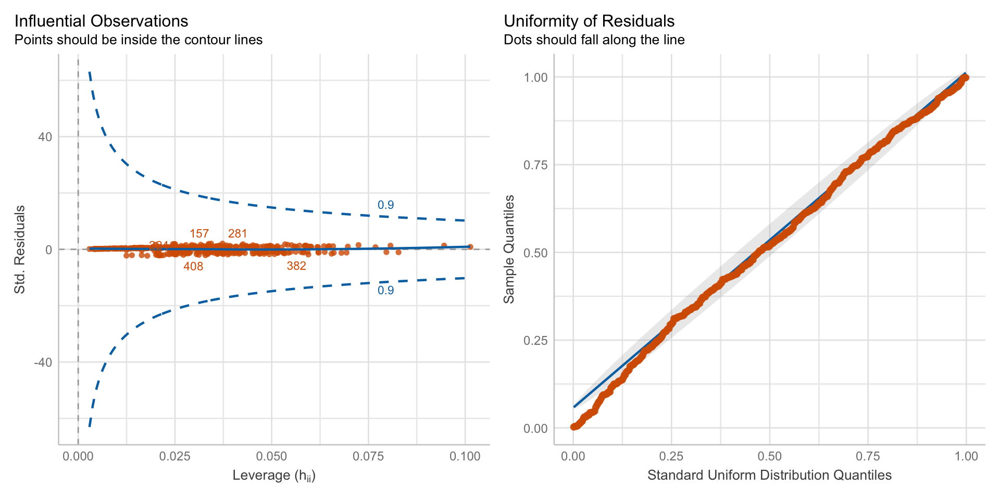

pacman::p_load(tidyverse, magrittr, conflicted, broom,
parameters, performance, gtsummary,
tidymodels, cutpointr)
conflict_prefer("select", "dplyr")
conflict_prefer("filter", "dplyr")
conflict_prefer("mutate", "dplyr")
conflict_prefer("extract", "magrittr")
cbbPalette <- c("#000000", "#E69F00", "#56B4E9", "#009E73",
"#F0E442", "#0072B2", "#D55E00", "#CC79A7")43 Logistische Regression
Version vom July 17, 2023 um 20:31:22
“Sometimes I feel like everybody is a sexy baby and I’m a monster on the hill.” — Taylor Swift, Anti-Hero
Die logistische Regression ist die Regression, wenn wir rüber in die Medizin schauen. Wohl in keinem Bereich der Wissenschaften wird so viel eine logistische Regression gerechnet wie in der Humanmedizin, Epidemiologie oder Pharmazie. Wir haben in der logistischen Regression ein \(0/1\) Outcome als \(y\) vorliegen. Also entweder ist eine Beobachtung erkrankt oder nicht. Meistens beschränkt sich die Betrachtung auf erkrankt (\(1\), ja) oder eben nicht erkrankt (\(0\), nein) bzw. gesund. Wichtig hierbei ist, dass wir eigentlich immer sagen, dass das Schlechte mit \(1\) kodiert wird. Wenn du das machst, dann wird dir die Interpretation der Effektschätzer der logistischen Regression leichter fallen.
Gleich zu Beginn dann nochmal wir werden die logistische Regression in den Agrarwissenschaften eher selten sehen. Im Bereich der Pflanzenwissenschaften kommt die logistische Regression kaum bis gar nicht vor. Im Bereich der Tierwissenschaften schon eher, aber dort dann im Bereich der Tiermedizin und eben wieder Erkrankungen.
Wo wir hingegen dann wieder die logistische Regression brauchen, ist bei der Klassifikation oder eben der Vorhersage von einem binären Ereignis. Dafür bietet sich dann die logistische Regression wieder an. Deshalb werden wir am Ende des Kapitels nochmal was zur Klassifikation machen, obwohl das hier eigentlich nur so halb reinpasst. Wenn du nicht Klassifizieren willst, dann lasse den letzten Abschnitt einfach weg.
43.1 Annahmen an die Daten
Unser gemessenes Outcome \(y\) folgt einer Binomialverteilung. Damit finden wir im Outcome nur \(0\) oder \(1\) Werte.
Im folgenden Kapitel zu der multiplen logistischen linearen Regression gehen wir davon aus, dass die Daten in der vorliegenden Form ideal sind. Das heißt wir haben weder fehlende Werte vorliegen, noch haben wir mögliche Ausreißer in den Daten. Auch wollen wir keine Variablen selektieren. Wir nehmen alles was wir haben mit ins Modell. Sollte eine oder mehre Bedingungen nicht zutreffen, dann schaue dir einfach die folgenden Kapitel an.
- Wenn du fehlende Werte in deinen Daten vorliegen hast, dann schaue bitte nochmal in das Kapitel 38 zu Imputation von fehlenden Werten.
- Wenn du denkst, dass du Ausreißer oder auffälige Werte in deinen Daten hast, dann schaue doch bitte nochmal in das Kapitel 37 zu Ausreißer in den Daten.
- Wenn du denkst, dass du zu viele Variablen in deinem Modell hast, dann hilft dir das Kapitel 36 bei der Variablenselektion.
Daher sieht unser Modell wie folgt aus. Wir haben ein \(y\) und \(p\)-mal \(x\). Wobei \(p\) für die Anzahl an Variablen auf der rechten Seite des Modells steht. Im Weiteren folgt unser \(y\) einer Binomailverteilung. Damit finden wir im Outcome nur \(0\) oder \(1\) Werte. Das ist hier sehr wichtig, denn wir wollen ja eine multiple logistische lineare Regression rechnen.
\[ y \sim x_1 + x_2 + ... + x_p \]
Wir können in dem Modell auch Faktoren \(f\) haben, aber es geht hier nicht um einen Gruppenvergleich. Das ist ganz wichtig. Wenn du einen Gruppenvergleich rechnen willst, dann musst du in Kapitel 31 nochmal nachlesen, wir du dann das Modell weiterverwendest.
43.2 Genutzte R Pakete für das Kapitel
Wir wollen folgende R Pakete in diesem Kapitel nutzen.
Am Ende des Kapitels findest du nochmal den gesamten R Code in einem Rutsch zum selber durchführen oder aber kopieren.
43.3 Daten
In diesem Kapitel nutzen wir die infizierten Ferkel als Beispieldatensatz. Wir haben in dem Datensatz über vierhundert Ferkel untersucht und festgehalten, ob die Ferkel infiziert sind (\(1\), ja) oder nicht infiziert (\(0\), nein). Wir haben daneben noch eine ganze Reihe von Risikofaktoren erhoben. Hier sieht man mal wieder wie wirr die Sprache der Statistik ist. Weil wir rausfinden wollen welche Variable das Risiko für die Infektion erhöht, nennen wir diese Variablen Risikofaktoren. Obwohl die Variablen gar keine kategorialen Spalten sin bzw. nicht alle. So ist das dann in der Statistik, ein verwirrender Begriff jagt den Nächsten.
pig_tbl <- read_excel("data/infected_pigs.xlsx") Schauen wir uns nochmal einen Ausschnitt der Daten in der Tabelle 43.1 an.
| age | sex | location | activity | crp | frailty | bloodpressure | weight | creatinin | infected |
|---|---|---|---|---|---|---|---|---|---|
| 61 | male | northeast | 15.31 | 22.38 | robust | 62.24 | 19.05 | 4.44 | 1 |
| 53 | male | northwest | 13.01 | 18.64 | robust | 54.21 | 17.68 | 3.87 | 1 |
| 66 | female | northeast | 11.31 | 18.76 | robust | 57.94 | 16.76 | 3.01 | 0 |
| 59 | female | north | 13.33 | 19.37 | robust | 56.15 | 19.05 | 4.35 | 1 |
| 63 | male | northwest | 14.71 | 21.57 | robust | 55.38 | 18.44 | 5.27 | 1 |
| 55 | male | northwest | 15.81 | 21.45 | robust | 60.29 | 18.42 | 4.78 | 1 |
| … | … | … | … | … | … | … | … | … | … |
| 54 | female | north | 11.82 | 21.5 | pre-frail | 55.32 | 19.75 | 3.92 | 1 |
| 56 | male | west | 13.91 | 20.8 | frail | 58.37 | 17.28 | 7.44 | 0 |
| 57 | male | northwest | 12.49 | 21.95 | pre-frail | 56.66 | 16.86 | 2.44 | 1 |
| 61 | male | northwest | 15.26 | 23.1 | robust | 57.18 | 15.55 | 3.08 | 1 |
| 59 | female | north | 13.13 | 20.23 | robust | 56.64 | 18.6 | 3.41 | 0 |
| 63 | female | north | 10.01 | 19.89 | robust | 57.46 | 18.6 | 4.2 | 1 |
In dem nächsten Abschnitt werden wir die Daten nutzen um rauszufinden welche Variablen einen Einfluss auf den Infektionsstatus der Ferkel hat.
43.4 Theoretischer Hintergrund
Wir schaffen wir es, durch einen \(0/1\) Outcome auf der y-Achse eine gerade Linie durch die Punkte zu zeichnen und die Koeffiziente dieser Gerade zu bestimmen? Immerhin gibt es ja gar keine Werte zwischen \(0\) und \(1\). In Abbildung 43.1 sehen wir beispielhaft den Zusammenhang zwischen dem Infektionsstatus und der Aktivität der Ferkel. Wir haben zwei horizontale Linien. Wie zeichen wir jetzt da eine Gerade durch?
ggplot(pig_tbl, aes(x = activity, y = infected)) +
theme_bw() +
geom_point() 
Der Trick hierbei ist wieder die Transformation des Zusammenhangs von \(y \sim x\) auf einen \(\log\)-scale. Das heißt wir Rechnen nicht mit den \(0/1\) Werten sondern transformieren den gesamten Zusammenhang. Das ist wichtig, den es gibt einen Unterschied zwischen der Transformation von \(y\) und der Transformation die hier gemeint ist. Wir halten fest, wir rechnen also nciht auf der ursprünglichen Skala der Daten sondern auf der \(\log\)-scale. Allgemeiner wird auch von der link-Funktion gesprochen, da wir ja verschiedene Möglichkeiten der Transformation des Zusammenhangs haben.
Hier gibt es nur die Kurzfassung der link-Funktion. Dormann (2013) liefert hierzu in Kapitel 7.1.3 nochmal ein Einführung in das Thema.
Wir gehen wir also vor. Zuerst Modellieren wir die Wahrscheinlichkeit für den Eintritt des Ereignisses. Wir machen also aus unseren binären \(0/1\) Daten eine Wahrscheinlichkeit für den Eintritt von 1.
\[ Y \rightarrow Pr(Y = 1) \]
Damit haben wir schon was erreicht den \(Pr(Y = 1)\) liegt zwischen \(0\) und \(1\). Damit haben wir also schon Werte dazwischen. Wenn wir aber normalverteilte Residuen haben wollen, dann müssen unsere Werte von \(-\infty\) bis \(+\infty\) laufen können. Daher rechnen wir im Weiteren die Chance.
\[ \cfrac{Pr(y = 1)}{1 - Pr(Y = 1)} \] Die Chance (eng. Odds) für das Eintreten von \(Y=1\) ist eben die Wahrscheinlichkeit für das Eintreten geteilt durch die Gegenwahrscheinlichkeit. Das ist schon besser, denn damit liegen unsere transformierten Werte für den Zusammenhang schon zwischen \(0\) und \(+\infty\). Wenn wir jetzt noch den \(\log\) von den Chancen rechnen, dann haben wir schon fast alles was wir brauchen.
\[ \log\left(\cfrac{Pr(y = 1)}{1 - Pr(Y = 1)}\right) \]
Der Logarithmus der Chance liegt dann zwischen \(-\infty\) und \(+\infty\). Deshalb spricht man auch von den \(\log\)-Odds einer logistischen Regression. Auch sieht man hier woher das logistisch kommt. Wir beschreiben im Namen auch gleich die Transformation mit. Am ende kommen wir somit dann auf folgendes Modell.
\[ \log\left(\cfrac{Pr(y = 1)}{1 - Pr(Y = 1)}\right) = \beta_0 + \beta_1 x_1 + ... + \beta_p x_p + \epsilon \] Vielleicht ist dir der Begriff Wahrscheinlichkeit und der Unterschied zur Chance nicht mehr so präsent. Deshalb hier nochmal als Wiederholung oder Auffrischung.
- Eine Wahrscheinlichkeit beschreibt dem Anteil an Allen. Zum Beispiel den Anteil Gewinner an allen Teilnehmern. Den Anteil Personen mit Therapieerfolg an allen Studienteilnehmern.
- Eine Chance oder (eng. Odds) beschreibt ein Verhältnis. Somit das Verhältnis Gewinner zu Nichtgewinner. Oder das Verhältnis Personen mit Therapieerfolg zu Personen ohne Therapieerfolg
Nochmal an einem Zahlenbeispiel. Wenn wir ein Glücksspiel haben, in dem es 2 Kombinationen gibt die gewinnen und drei 3 Kombinationen die verlieren, dann haben wir eine Wahrscheinlichkeit zu gewinnen von \(2 / 5 = 0.40 = 40\%\). Wenn wir die Chance zu gewinnen ausrechnen erhalten wir \(2:3 = 0.67 = 67\%\). Wir sehen es gibt einen deutlichen Unterschied zwischen Chance und Wahrscheinlichkeit. Wenn wir große Fallzahl haben bzw. kleine Wahrscheinlichkeiten, dann ist der Unterschied nicht mehr so drastisch. Aber von einer Gleichkeit von Wahrscheinlichkeit und Chance zu sprechen kann nicht ausgegangen werden.
Was ist nun das Problem? Wir erhalten aus einer logistischen Regression \(\log\)-Odds wieder. Der Effektchätzer ist also eine Chance. Wir werden aber das Ergebnis wie eine Wahrscheinlichkeit interpretieren. Diese Diskrepanz ist wenigen bekannt und ein Grund, warum wir in der Medizin immer uns daran erinnern müssen, was wir eigentlich mit der logistischen Regression aussagen können.
43.5 Modellierung
Die Modellerierung der logistischen Regression ist sehr einfach. Wir nutzen wieder die Formelschreibweise im glm() um unsere Variablen zu definieren. Wenn unser Outcome nicht binär ist, dann jammert R und gibt uns einen Fehler aus. Ich kann hier nur dringlichst raten, das Outcome in \(0/1\) zu kodieren mit dem Schlechten als \(1\).
Das glm() muss dann noch wissen, dass es eine logistische Regression rechnen soll. Das machen wir in dem wir als Verteilungsfamilie die Binomialverteilung auswählen. Wir geben also an family = binomial und schon können wir das volle Modell fitten.
log_fit <- glm(infected ~ age + sex + location + activity + crp +
frailty + bloodpressure + weight + creatinin,
data = pig_tbl, family = binomial)Das war extrem kurz und scherzlos. Also können wir dann auch ganz kurz schauen, ob das Modell einigermaßen funktioniert hat.
43.6 Performance des Modells
Nachdem wir das Modell gefittet haben, wollen wir uns nochmal das \(R^2\) wiedergeben lassen um zu entscheiden, ob unser Modell einigermaßen funktioniert hat. Dieser Abschnitt ist sehr kurz. Wir haben leider nur sehr wenige Möglichkeiten um ein logistischen Modell zu bewerten.
r2(log_fit)# R2 for Logistic Regression
Tjur's R2: 0.285Ja, so viel Varianz erklären wir nicht, aber wenn du ein wenig im Internet suchst, dann wirst du feststellen, dass das Bestimmtheitsmaß so eine Sache in glm()’s ist. Wir sind aber einigermaßen zufrieden. Eventuell würde eine Variablenselektion hier helfen, aber das ist nicht Inhalt dieses Kapitels.
In Abbildung 43.2 schauen wir nochmal auf die Residuen und die möglichen Ausreißer. Wieder sehen beide Plots einigermaßen in Ordnung aus. Die Abbildungen sind jetzt nicht die Besten, aber ich würde hier auch anhand der Diagnoseplots nicht die Modellierung verwerfen.
check_model(log_fit, colors = cbbPalette[6:8],
check = c("qq", "outliers")) 
check_model().43.7 Interpretation des Modells
Zu Interpretation schauen wir uns wie immer nicht die rohe Ausgabe an, sondern lassen uns die Ausgabe mit der Funktion model_parameters() aus dem R Paket parameters wiedergeben. Wir müssen noch die Option exponentiate = TRUE wählen, damit unsere Koeffizienten nicht als \(\log\)-Odds sondern als Odds wiedergeben werden. Korrekterweise erhalten wir die Odds ratio wieder was wir auch als \(OR\) angegeben.
model_parameters(log_fit, exponentiate = TRUE)Parameter | Odds Ratio | SE | 95% CI | z | p
----------------------------------------------------------------------------
(Intercept) | 2.91e-11 | 1.24e-10 | [0.00, 0.00] | -5.69 | < .001
age | 1.00 | 0.03 | [0.95, 1.06] | 0.16 | 0.872
sex [male] | 0.74 | 0.26 | [0.37, 1.48] | -0.84 | 0.398
location [northeast] | 1.07 | 0.40 | [0.52, 2.22] | 0.19 | 0.852
location [northwest] | 0.62 | 0.20 | [0.33, 1.17] | -1.47 | 0.142
location [west] | 0.76 | 0.28 | [0.37, 1.56] | -0.75 | 0.450
activity | 1.05 | 0.10 | [0.87, 1.27] | 0.51 | 0.612
crp | 2.64 | 0.29 | [2.14, 3.32] | 8.70 | < .001
frailty [pre-frail] | 1.12 | 0.46 | [0.49, 2.48] | 0.27 | 0.788
frailty [robust] | 0.81 | 0.31 | [0.37, 1.72] | -0.54 | 0.588
bloodpressure | 1.09 | 0.04 | [1.01, 1.17] | 2.09 | 0.037
weight | 1.00 | 0.09 | [0.85, 1.19] | 0.06 | 0.955
creatinin | 1.12 | 0.10 | [0.94, 1.33] | 1.23 | 0.218 Wie interpretieren wir nun das \(OR\) einer logistischen Regression? Wenn wir darauf gechtet haben, dass wir mit \(1\) das Schlechte meinen, dann können wir wir folgt mit dem \(OR\) sprechen. Wenn wir ein \(OR > 1\) haben, dann haben wir ein Risiko vorliegen. Die Variable mit einem \(OR\) größer als \(1\) wird die Chance auf den Eintritt des schlechten Ereignisses erhöhen. Wenn wir ein \(OR < 1\) haben, dann sprechen wir von einem protektiven Faktor. Die Variable mit einem \(OR\) kleiner \(1\) wird vor dem Eintreten des schlechten Ereignisses schützen. Schauen wir uns den Zusammenhang mal im Detail für die Ferkeldaten an.
-
(intercept)beschreibt den Intercept der logistischen Regression. Wenn wir mehr als eine simple Regression vorliegen haben, wie in diesem Fall, dann ist der Intercept schwer zu interpretieren. Wir konzentrieren uns auf die Effekte der anderen Variablen. -
sexbeschreibt den Effekt der männlichen Ferkel zu den weiblichen Ferkeln. Daher haben männliche Ferkel eine \(2.75\) höhere Chance infiziert zu werden als weibliche Ferkel. -
location [northeast],location [northwest]undlocation [west]beschreibt den Unterschied zurlocation [north]. Alle Orte haben eine geringere Chance für eine Infektion zum Vergleich der Bauernhöfe im Norden. Zwar ist keiner der Effekte signifikant, aber ein interessantes Ergebnis ist es allemal. -
activitybeschreibt den Effekt der Aktivität der Ferkel. Wenn sich die Ferkel mehr bewegen, dann ist die Chance für eine Infektion gemindert. -
crpbeschreibt den Effekt des CRP-Wertes auf den Infektionsgrad. Pro Einheit CRP steigt die Chance einer Infektion um \(2.97\) an. Das ist schon ein beachtlicher Wert. -
frailtybeschreibt die Gebrechlichkeit der Ferkel. Hier müssen wir wieder schauen, zu welchem Level vonfrailtywir vergleichen. Hier vergleichen wir zufrail. Also dem höchsten Gebrechlichkeitgrad. Ferkel die weniger gebrechlich sind, haben eine niedrigere Chance zu erkranken. -
bloodpressure,weightundcreatininsind alles Variablen, mit einem \(OR\) größer als \(1\) und somit alles Riskovariablen. Hier sind zwar die \(OR\) relativ klein, aber das muss erstmal nichts heißen, da die \(OR\) ja hier die Änderung für eine Einheit von \(x\) beschreiben. Deshalb musst du immer schauen, wie die Einheiten von kontinuierlichen kodiert Variablen sind.
Kommen wir nochmal zu den gänigen Tabellen für die Zusammenfassung eines Ergebnisses einer logistischen Regression. Teilweise sind diese Tabellen so generisch und häufiog verwendet, dass wir schon einen Begriff für diese Tabellen haben. In Tabelle 43.2 siehst du die table 1 für die Übersicht aller Risikovariablen aufgeteilt nach dem Infektionsstatus. Diese Art der Tabellendarstellung ist so grundlegend für eine medizinische Veröffentlichung, dass sich eben der Begriff table 1 etabliert hat. Fast jede medizinische Veröffentlichung hat als erste Tabelle diese Art von Tabelle angegeben. Hierbei ist wichtig, dass die \(p\)-Werte alle nur aus einem einfachen statistischen Test stammen. Die \(p\)-Werte einer multiplen logistischen Regression werden daher immer anders sein.
pig_tbl %>% tbl_summary(by = infected) %>% add_p() %>% as_flex_table()Characteristic |
0, N = 1361 |
1, N = 2761 |
p-value2 |
|---|---|---|---|
age |
59.5 (57.0, 63.0) |
60.0 (57.0, 63.0) |
0.9 |
sex |
0.2 |
||
female |
47 (35%) |
114 (41%) |
|
male |
89 (65%) |
162 (59%) |
|
location |
0.3 |
||
north |
36 (26%) |
85 (31%) |
|
northeast |
23 (17%) |
61 (22%) |
|
northwest |
48 (35%) |
76 (28%) |
|
west |
29 (21%) |
54 (20%) |
|
activity |
13.39 (12.25, 14.34) |
13.24 (12.28, 14.54) |
0.8 |
crp |
19.12 (18.12, 19.83) |
20.56 (19.77, 21.46) |
<0.001 |
frailty |
0.5 |
||
frail |
18 (13%) |
37 (13%) |
|
pre-frail |
42 (31%) |
101 (37%) |
|
robust |
76 (56%) |
138 (50%) |
|
bloodpressure |
56.2 (54.3, 58.5) |
57.2 (55.1, 59.6) |
0.021 |
weight |
18.61 (17.34, 19.41) |
18.32 (17.19, 19.60) |
0.8 |
creatinin |
4.85 (3.67, 5.93) |
4.86 (4.06, 5.84) |
0.3 |
1Median (IQR); n (%) | |||
2Wilcoxon rank sum test; Pearson's Chi-squared test | |||
In Tabelle 43.3 siehst du nochmal für eine Auswahl an Variablen die simplen logistischen Regressionen gerechnet. Du müsst also nicht jede simple logistische Regression selber rechnen, sondern kannst auch die Funktion tbl_uvregression() verwenden. Das R Paket tbl_summary erlaubt weitreichende Formatierungsmöglichkeiten. Am bestes schaust du einmal im Tutorial Tutorial: tbl_regression selber nach was du brauchst oder anpassen willst.
pig_tbl%>%
select(infected, age, crp, bloodpressure) %>%
tbl_uvregression(
method = glm,
y = infected,
method.args = list(family = binomial),
exponentiate = TRUE,
pvalue_fun = ~style_pvalue(.x, digits = 2)
) %>% as_flex_table()Characteristic |
N |
OR1 |
95% CI1 |
p-value |
|---|---|---|---|---|
age |
412 |
1.00 |
0.95, 1.04 |
0.88 |
crp |
412 |
2.62 |
2.14, 3.27 |
<0.001 |
bloodpressure |
412 |
1.08 |
1.02, 1.15 |
0.013 |
1OR = Odds Ratio, CI = Confidence Interval | ||||
nun gibt es viele Möglichkeiten sich die logistische Regression wiedergeben zu lassen In Tabelle 43.4 siehst du nochmal die Möglichkeit, die dir das R Paket tbl_summary() bietet. Am Ende ist es dann eine reine Geschmacksfrage, wie wir die Daten dann aufarbeiten wollen.
log_fit %>% tbl_regression(exponentiate = TRUE) %>% as_flex_table()Characteristic |
OR1 |
95% CI1 |
p-value |
|---|---|---|---|
age |
1.00 |
0.95, 1.06 |
0.9 |
sex |
|||
female |
— |
— |
|
male |
0.74 |
0.37, 1.48 |
0.4 |
location |
|||
north |
— |
— |
|
northeast |
1.07 |
0.52, 2.22 |
0.9 |
northwest |
0.62 |
0.33, 1.17 |
0.14 |
west |
0.76 |
0.37, 1.56 |
0.5 |
activity |
1.05 |
0.87, 1.27 |
0.6 |
crp |
2.64 |
2.14, 3.32 |
<0.001 |
frailty |
|||
frail |
— |
— |
|
pre-frail |
1.12 |
0.49, 2.48 |
0.8 |
robust |
0.81 |
0.37, 1.72 |
0.6 |
bloodpressure |
1.09 |
1.01, 1.17 |
0.037 |
weight |
1.00 |
0.85, 1.19 |
>0.9 |
creatinin |
1.12 |
0.94, 1.33 |
0.2 |
1OR = Odds Ratio, CI = Confidence Interval | |||
Zum Abschluss wollen wir uns einmal die Ergebnisse des Modellfits als logistischen Gerade für eine simple lineare Regression mit dem Modell \(infected \sim crp\) anschauen. Wie immer können wir uns den Zusammenhang nur in einem simplen Modell anschauen. Im Fall einer multiplen linearen Regresion können wir nicht so viele Dimensionen in einer Grpahik darstellen. Wir fitten also das Modell log_fit_crp wie im folgenden dargestellt.
log_fit_crp <- glm(infected ~ crp, data = pig_tbl, family = binomial)Nun können wir uns mit der Funktion predict() die Wert auf der Geraden wiedergeben lassen. Wenn wir predict() nur so aufrufen, dann erhalten wir die Werte für \(y\) auf der transformierten \(link\)-Scale wieder. Das hilft uns aber nicht weiter, wir haben ja nur 0 und 1 Werte für \(y\) vorliegen.
1 2 3 4 5 6 7 8 9 10
3.19 -0.41 -0.29 0.29 2.41 2.30 -0.08 -0.08 2.72 1.83 Da wir die Werte für die Wahrscheinlichkeit das ein Ferkel infiziert ist, also die Wahrscheinlichkeit \(Pr(infected = 1)\), müssen wir noch die Option type = reponse wählen. So erhalten wir die Wahrscheinlichkeiten wiedergegeben.
1 2 3 4 5 6 7 8 9 10
0.96 0.40 0.43 0.57 0.92 0.91 0.48 0.48 0.94 0.86 Abschließend können wir uns die Gerade auch in der Abbildung 43.3 visualisieren lassen. Auf der x-Achse sehen wir die crp-Werte und auf der y-Achse den Infektionsstatus. Auf der \(reponse\)-scale sehen wir eine S-Kurve. Auf der \(link\)-scale würden wir eine Gerade sehen.
ggplot(pig_tbl, aes(x = crp, y = infected)) +
theme_bw() +
geom_point() +
geom_line(aes(y = predict(log_fit_crp, type = "response")), color = "red") 
crp.Nun haben wir das Kapitel zur logistischen Regression fast abgeschlossen. Was noch fehlt ist die Besonderheit der Prädiktion im Kontext des maschinellen Lernens. Das machen wir jetzt im folgenden Abschnitt. Wenn dich die logistische Regression nur interessiert hat um einen kausalen Zusammenhang zwischen Einflussvariablen und dem binären Outcome zu modellieren, dann sind wir hier fertig.
43.8 Dichotomisierung
Manchmal ist es so, dass wir eine logistsiche Regression rechnen wollen. Wir fragen nicht, wie ist unser \(y\) verteilt und was für eine Regression können wir dann rechnen? Sondern wir wollen mit der logistischen Regression durch die Wand. Wenn wir das wollen, dann können wir unser \(y\) dichotomisieren. Das heißt, wir machen aus einer Variable, die mehr als zwei Level hat einen Faktor mit zwei Leveln. Dafür stehen uns verschiedene Möglichkeiten offen.
In dem R Paket dplyr haben wir mit der Funktion recode() die Möglichkeit eine Variable von alt = neu umzukodieren. Dabei müssen wir natürlich darauf achten, dass wir die alten Level der Variable richtig schreiben und bei der neuen Level nur zwei Namen eintragen. Dann sind wir auch schon durch mit der Umbenennung.
pig_tbl %>%
mutate(frailty = recode(frailty,
"robust" = "robust",
"pre-frail" = "frail_prefrail",
"frail" = "frail_prefrail")) %>%
pull(frailty) %>% extract(1:20) [1] "robust" "robust" "robust" "robust"
[5] "robust" "robust" "frail_prefrail" "robust"
[9] "robust" "robust" "frail_prefrail" "robust"
[13] "robust" "robust" "frail_prefrail" "robust"
[17] "frail_prefrail" "frail_prefrail" "robust" "frail_prefrail"Ich finde die Funktion case_when() etwas übersichtlicher. Das ist aber eigentlich nur eine Geschmacksfrage. Am Ende kommt jedenfalls das Gleiche heraus.
pig_tbl %>%
mutate(frailty = case_when(frailty == "robust" ~ "robust",
frailty == "pre-frail" ~ "frail",
frailty == "frail" ~ "frail")) %>%
pull(frailty) %>% extract(1:20) [1] "robust" "robust" "robust" "robust" "robust" "robust" "frail" "robust"
[9] "robust" "robust" "frail" "robust" "robust" "robust" "frail" "robust"
[17] "frail" "frail" "robust" "frail" Häufig haben wir auch den Fall, dass wir keine kontinuierlichen \(x\) in unseren Daten wollen. Alles soll sich in Faktoren verwandeln, so dass wir immer eine 2x2 Tafel haben. Wenn es sein muss, liefert hier cutpointr() die Lösung für dieses Problem. Wir müssen dafür zum einen unser kontinuierliches \(x\) angeben und dann mit class unser binäres \(y\). Wir erhalten dann für unser \(y\) den bestmöglichen Split für unser \(x\). Im Beispiel wollen wir einmal die Variable crp für unser Outcome infected in zwei Gruppen aufteilen. Wir wollen eigentlich immer zwei Gruppen, da wir dann in dem Setting eines \(\mathcal{X}^2\)-Test und einer einfacheren Interpretation von dem \(OR\) sind.
Wir immer haben wir eine große Bandbreite an Optionen, wie wir den besten Split unseres \(x\) kriegen wollen. Ich gehe hier mit den Default-Werten. Damit kommt man eigentlich recht weit. Ich möchte gerne die Summe der Sensivität und der Spezifität sum_sens_spec über alle möglichen Cutpoints maximieren maximize_metric. Der Cutpoint mit der maximalen Summe an Sensivität und der Spezifität wird mir dann wiedergegeben.
Natürlich hat das R Paket cutpoint noch viel mehr Optionen. Mehr gibt es in An introduction to cutpointr.
cp_crp <- cutpointr(data = pig_tbl,
x = crp,
class = infected,
method = maximize_metric,
metric = sum_sens_spec)
cp_crp# A tibble: 1 × 16
direction optimal_cutpoint method sum_sens_spec acc sensitivity
<chr> <dbl> <chr> <dbl> <dbl> <dbl>
1 >= 19.71 maximize_metric 1.48870 0.752427 0.768116
specificity AUC pos_class neg_class prevalence outcome predictor
<dbl> <dbl> <dbl> <dbl> <dbl> <chr> <chr>
1 0.720588 0.806119 1 0 0.669903 infected crp
data roc_curve boot
<list> <list> <lgl>
1 <tibble [412 × 2]> <rc_ctpnt [282 × 10]> NA In Abbildung 43.4 sehe wir die Ausgabe der Funktion cutpointr() nochmal visualisiert. Wir sehen, dass der Split einigermaßen die crp-Werte im Sinne von unserem Outcome aufteilt.
plot(cp_crp)
cutpointr für die Variable crp.Wir können uns jetzt noch den optimalen Cutpoint aus der Ausgabe herausziehen, wenn wir den Punkt nicht aus der Ausgabe ablesen wollen.
pluck(cp_crp, "optimal_cutpoint")[1] 19.71Am Ende können wir dann über case_when() uns ein binären CRP-Wert zusammenbauen. Wir müssen dann natürlich entscheiden welche Variable wir mit ins Modell nehme, aber meistens machen wir uns ja die Mühen um dann die neue Variable zu verwenden.
pig_tbl %>%
mutate(crp_bin = case_when(crp >= 19.84 ~ "high",
crp < 19.84 ~ "low")) %>%
select(crp, crp_bin) # A tibble: 412 × 2
crp crp_bin
<dbl> <chr>
1 22.4 high
2 18.6 low
3 18.8 low
4 19.4 low
5 21.6 high
6 21.4 high
7 19.0 low
8 19.0 low
9 21.9 high
10 21.0 high
# ℹ 402 more rowsDamit haben wir uns dann auch mit dem Problem der Dichotomisierung in der logististischen Regression einmal beschäftigt. Somit bleibt dann noch die Prädiktion übrig.
43.9 Prädiktion
Da wir später in dem Kapitel 56 die logistische Regression auch als Vergleich zu maschinellen Lernverfahren in der Klassifikation nutzen werden gehen wir hier auch die Prädiktion einmal für die logistische Regression durch. Wir wollen also eine Klassifikation, also eine Vorhersage, für das Outcome infected mit einer logistischen Regression rechnen. Wir nutzen dazu die Möglichkeiten des R Pakets tidymodels wodurch wir einfacher ein Modell bauen und eine Klassifikation rechnen können. Unsere Fragestellung ist, ob wir mit unseren Einflussvariablen den Infektionsstatus vorhersagen können. Das heißt wir wollen ein Modell bauen mit dem wir zukünftige Ferkel als potenziell krank oder gesund anhand unser erhobenen Daten einordnen bzw. klassifizieren können.
Mehr zu Rezepten (eng. recipes) kannst du im Kapitel 56 zu den Grundlagen des maschinellen Lernens erfahren.
Der erste Schritt einer Klassifikation ist immer sicherzustellen, dass unser Outcome auch wirklich aus Kategorien besteht. In R nutzen wir dafür einen Faktor und setzen dann auch gleich die Ordnung fest.
Nun bauen wir uns ein einfaches Rezept mit der Funktion recipe(). Dafür legen wir das Modell, was wir rechnen wollen einmal fest. Wir nehmen infected als Outcome und den Rest der Vairbalen . aus dem Datensatz pig_tbl als die \(x\) Variablen. Dann wollen wir noch alle Variablen, die ein Faktor sind in eine Dummyvariable umwandeln.
pig_rec <- recipe(infected ~ ., data = pig_tbl) %>%
step_dummy(all_nominal_predictors())Wir wollen jetzt unser Modell definieren. Wir rechnen eine logistsiche Regression und deshalb nutzen wir die Funktion logistic_reg(). Da wir wirklich viele Möglichkeiten hätten die logistische Regression zu rechnen, müssen wir noch den Algorithmus wählen. Das tuen wir mit der Funktion set_engine(). Wir nutzen hier den simplen glm() Algorithmus. Es gebe aber auch andere Implementierungen.
logreg_mod <- logistic_reg() %>%
set_engine("glm")Jetzt müssen wir noch einen Workflow definieren. Wir wollen ein Modell rechnen und zwar mit den Informationen in unserem Rezept. Das bauen wir einmal zusammen und schauen uns die Ausgabe an.
pig_wflow <- workflow() %>%
add_model(logreg_mod) %>%
add_recipe(pig_rec)
pig_wflow══ Workflow ════════════════════════════════════════════════════════════════════
Preprocessor: Recipe
Model: logistic_reg()
── Preprocessor ────────────────────────────────────────────────────────────────
1 Recipe Step
• step_dummy()
── Model ───────────────────────────────────────────────────────────────────────
Logistic Regression Model Specification (classification)
Computational engine: glm Das passt alles soweit. Ja, es ist etwas kompliziert und das ginge sicherlich auch einfacher. Wir werden dann aber noch sehen, dass wir es uns mit dem Ablauf sehr viel einfacher machen, wenn wir kompliziertere Modelle schätzen wollen. Mehr dazu findest du dann im Kapitel 56 zu den maschinellen Lernverfahren.
Jetzt können wir den Workflow nutzen um den Fit zu rechnen. Bis jetzt haben wir nur Informationen gesammelt. Dadurch das wir jetzt das Objekt pig_workflow in die Funktion fit() pipen rechnen wir das Modell.
pig_fit <- pig_wflow %>%
fit(data = pig_tbl)Das erhaltende Modell könne wir dann in die Funktion predict() stecken um uns den Inektionsstatus vorhersagen zu lassen.
predict(pig_fit, new_data = pig_tbl)# A tibble: 412 × 1
.pred_class
<fct>
1 1
2 0
3 0
4 1
5 1
6 1
7 0
8 0
9 1
10 1
# ℹ 402 more rowsIn der Spalte .pred_class finden wir dann die vorhergesagten Werte des Infektionsstatus anhand unseres gefitteten Modells. Eigentlich würden wir ja gerne die vorhergesagten Werte mit unseren Orginalwerten vergleichen. Hier hilft uns die Funktion augment(). Dank der Funktion augment() erhalten wir nicht nur die vorhergesagten Klassen sondern auch die Wahrscheinlichkeit für die Klassenzugehörigkeiten. Daneben dann aber auch die Originalwerte für den Infektionsstatus in der Spalte infected.
pig_aug <- augment(pig_fit, new_data = pig_tbl) %>%
select(infected, matches("^\\."))
pig_aug# A tibble: 412 × 4
infected .pred_class .pred_0 .pred_1
<fct> <fct> <dbl> <dbl>
1 1 1 0.0229 0.977
2 1 0 0.787 0.213
3 0 0 0.540 0.460
4 1 1 0.391 0.609
5 1 1 0.128 0.872
6 1 1 0.102 0.898
7 1 0 0.559 0.441
8 0 0 0.687 0.313
9 1 1 0.0556 0.944
10 1 1 0.193 0.807
# ℹ 402 more rowsWir können dann die Werte aus dem Objekt pig_aug nutzen um uns die ROC Kurve als Güte der Vorhersage wiedergeben zu lassen. Wir nutzen hier die schnelle Variante der Ploterstellung. In dem Kapitel 59.6 zum Vergleich von Algorithmen gehe ich noch näher auf die möglichen Optionen bei der Erstellung einer ROC Kurve ein. Hier fällt die ROC Kurve dann mehr oder minder vom Himmel. Ich musste noch der Funktion mitgeben, dass das Event bei uns das zweite Level des Faktors infected ist. Sonst ist unsere ROC Kurve einmal an der Diagonalen gespiegelt.
In dem Kapitel 29 erfährst du mehr darüber was eine ROC Kurve ist und wie du die ROC Kurve interpretieren kannst.
pig_aug %>%
roc_curve(truth = infected, .pred_1, event_level = "second") %>%
autoplot()Warning: Returning more (or less) than 1 row per `summarise()` group was deprecated in
dplyr 1.1.0.
ℹ Please use `reframe()` instead.
ℹ When switching from `summarise()` to `reframe()`, remember that `reframe()`
always returns an ungrouped data frame and adjust accordingly.
ℹ The deprecated feature was likely used in the yardstick package.
Please report the issue at <https://github.com/tidymodels/yardstick/issues>.
Na das hat doch mal gut funktioniert. Die ROC Kurve verläuft zwar nicht ideal aber immerhin ist die ROC Kurve weit von der Diagnolen entfernt. Unser Modell ist also in der Lage den Infektionsstatus der Ferkel einigermaßen solide vorherzusagen. Schauen wir uns noch die area under the curve (abk. AUC) an.
pig_aug %>%
roc_auc(truth = infected, .pred_1, event_level = "second")# A tibble: 1 × 3
.metric .estimator .estimate
<chr> <chr> <dbl>
1 roc_auc binary 0.819Der beste Wert wäre hier eine AUC von \(1\) und damit eine perfekte Vorhersage. Der schlechteste Wert wäre eine AUC von \(0.5\) und damit eine nahezu zufällige Zuordnung des Infeketionsstatus zu den Ferkeln von unserem Modell. Mit einer AUC von \(0.83\) können wir aber schon gut leben. Immerhin haben wir kaum am Modell rumgeschraubt bzw. ein Tuning betrieben. Wenn du mehr über Tuning und der Optimierung von Modellen zu Klassifikation wissen willst, dan musst du im Kapitel 56 zu den maschinellen Lernverfahren anfangen zu lesen.
Referenzen
Dormann, Carsten F. 2013. Parametrische Statistik. Springer.